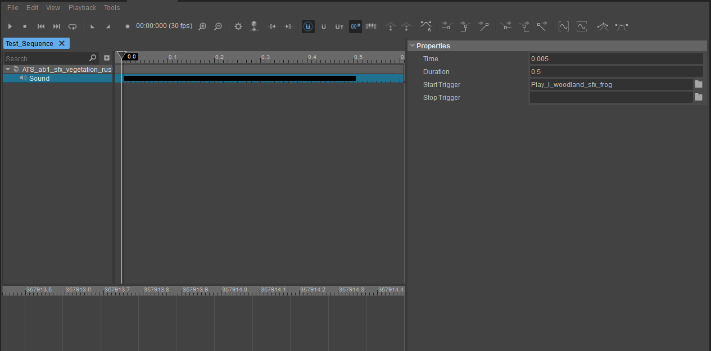

Обзор
В этом разделе описывается, как воспроизводить звуки в последовательностях Trackview.
Добавление звуков в последовательности Trackview
Создайте свой звук и событие его воспроизведения в Wwise.
В CRYENGINE используйте ACE (редактор управления звуком), чтобы подключить событие воспроизведения Wwise к триггеру аудиосистемы. Чтобы узнать больше о ACE, прочитайте
Откройте редактор Trackview (Инструменты -> Track View) и выберите эпизод из раскрывающегося меню на панели инструментов Trackview.
Выберите узел сущности, который должен воспроизводить звук. Если этот узел еще не содержит Звук трек, затем щелкните его правой кнопкой мыши и выберите Добавить трек -> Звук.
В Звук track double — нажмите, чтобы добавить ключ. Ключ можно перетащить на другое время или ввести время вручную над свойствами ключа справа.

Ключевые свойства, которые вы можете редактировать:
| Недвижимость | Описание |
|---|---|
| StartTrigger | Название триггера аудиосистемы, который срабатывает при нажатии клавиши. |
| StopTrigger | Название триггера аудиосистемы, который срабатывает по истечении времени, установленного в Продолжительность. Также ознакомьтесь с поведением Start/StopTrigger по умолчанию. здесь. |
| Продолжительность | Время после ключевой позиции, когда StopTrigger срабатывает. Если Продолжительность равен 0, StopTrigger не сработает. |
| Пользовательский цвет | Изменяет цвет продолжительности трека. |